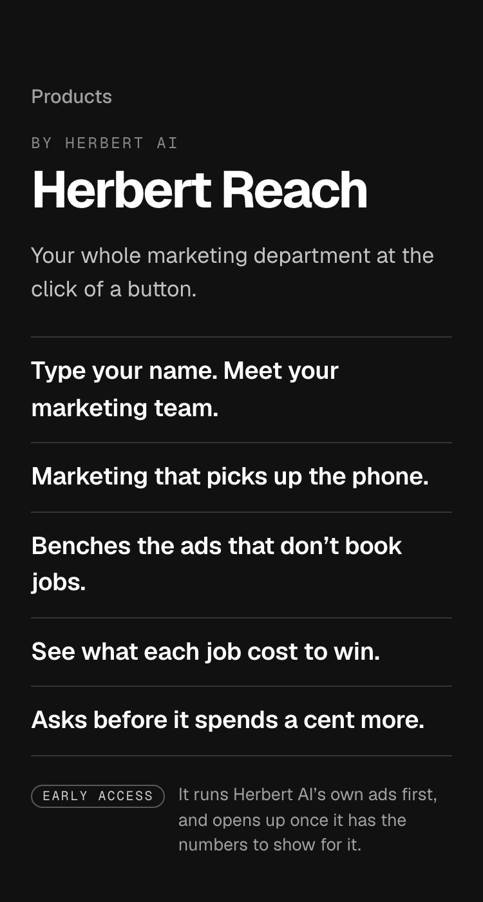
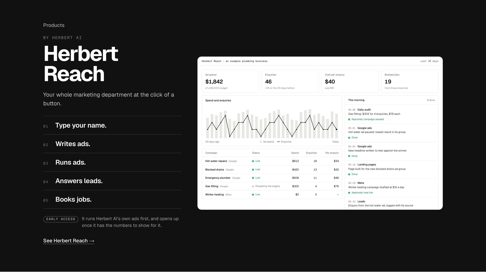
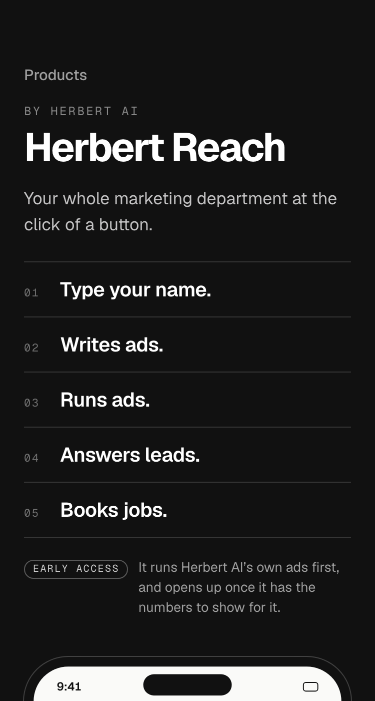
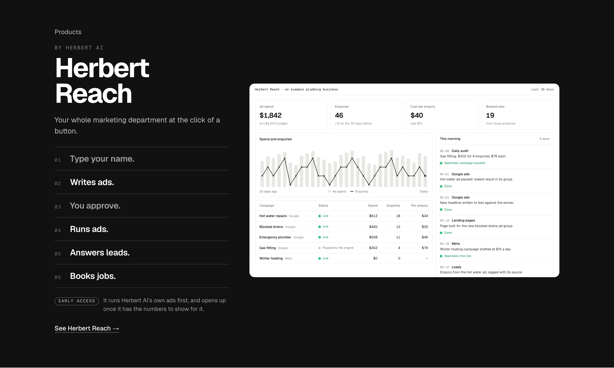
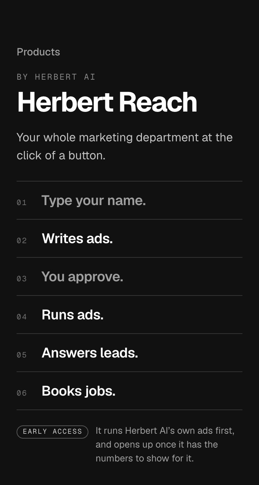

3. Round 3’s one-linersMy earlier pick: one line per job, more character in each line, no sequence.


Detail 2 of 6, round 4. Your story, then the same story with the owner’s approval as one more beat, then round 3’s one-liners to compare. Each row is its own line with a step number so it reads as a sequence. In 2 the two steps the owner does are set a shade softer, so the eye reads what you do against what it does.




